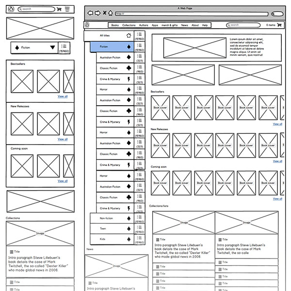
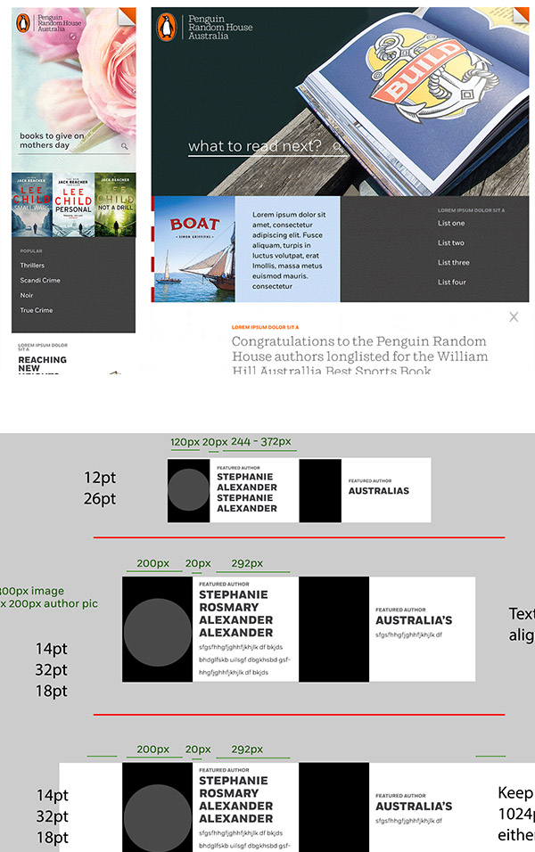
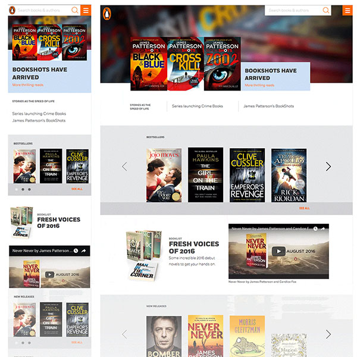

Early in the project, external UX Researchers were brought in to assist in the redesign of the penguin.com.au site. I began the project within the UX/UI Design team responsible for translating early wireframes to finished design. Later, I was made Lead Designer and took over the creation of a simple design system.
We created wireframes and simple prototypes to quickly test ideas and iterate on the provided wireframes.
One takeout from the research was the importance of the book as a physical object.
People responded well to a photo of a book on a bedside table, or next to a coffee in a nice cafe. With thousands of titles, and a regular release schedule, photographing or manually creating mockups of popular titles was a mammoth task.
To tackle this, I photographed a series of 60 blank books in common settings and cropped the images to standard social media sizes. I then built an online script using PHP and ImageMagick to fetch the cover image from our server, and render it directly onto these photos and return a high resolution JPG.
View the script (Archived version, rendering doesn't work)
Penguin had never used a design system before. As the development was being done in react, the project lent itself to breaking the design into components. I added some additional documentation to create a simple design system. Introducing a grid and a typographic style guide further simplified the handover.
After the initial designs were signed off, I continued to work closely with the Development team. As the launch deadline approached, I adapted and simplified the design, reusing existing react components in several places and offering design solutions where usability issues arose.
